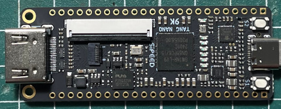
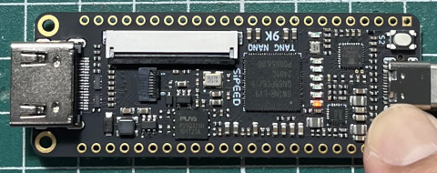

參考資訊：
https://github.com/YosysHQ/apicula/issues/244
https://github.com/YosysHQ/apicula/wiki/Nextpnr%E2%80%90Himbaechel-Gowin
main.vhd
library ieee;
use ieee.std_logic_1164.all;
entity main is
port(
btn : in bit;
led : out bit
);
end main;
architecture logic of main is
begin
led <= btn;
end logic;
main.cst
IO_LOC "led" 10; IO_LOC "btn" 4;
Makefile
all: yosys -m ghdl -p "ghdl main.vhd -e main; synth_gowin -json main.json -top main" nextpnr-himbaechel --json main.json --write main.pack --device GW1NR-LV9QN88PC6/I5 --vopt family=GW1N-9C --vopt cst=main.cst gowin_pack -d GW1N-9C -o main.fs main.pack ram: openFPGALoader -m -b tangnano9k main.fs flash: openFPGALoader -f -b tangnano9k main.fs clean: rm -f *.json *.fs *.pack
編譯、下載
$ make $ make ram
完成

